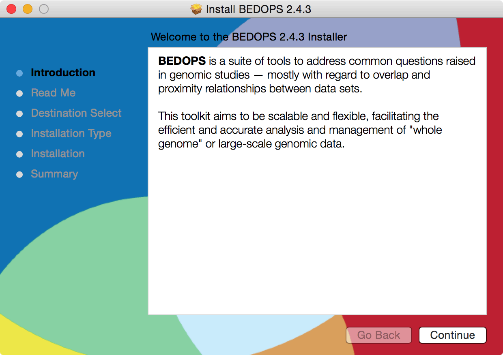

2. Installation¶
BEDOPS is available to users as pre-built binaries and source code.
2.1. Via pre-built packages¶
Pre-built binaries offer the easiest and fastest installation option for users of BEDOPS. At this time, we offer binaries for 64-bit versions of Linux and OS X (Intel) platforms. 32-bit binaries can be built via source code by adjusting compile-time variables.
2.1.1. Linux¶
Download the current 64-bit package for Linux from Github BEDOPS Releases.
Extract the package to a location of your choice. In the case of 64-bit Linux:
$ tar jxvf bedops_linux_x86_64-vx.y.z.tar.bz2
Replace
x,yandzwith the version number of BEDOPS you have downloaded.Copy the extracted binaries to a location of your choice which is in your environment’s
PATH, e.g./usr/local/bin:$ cp bin/* /usr/local/bin
Change this destination folder, as needed.
2.1.2. Mac OS X¶
Download the current Mac OS X package for BEDOPS from Github BEDOPS Releases.
Locate the installer package (usually located in
~/Downloads– this will depend on your web browser configuration):
Double-click to open the installer package. It will look something like this:
Follow the instructions to install BEDOPS and library dependencies to your Mac. (If you are upgrading from a previous version, components will be overwritten or removed, as needed.)
{kind=link}
2.2. Via source code¶
2.2.1. Linux¶
Compilation of BEDOPS on Linux requires GCC 4.8.2 (both gcc and g++ and related components) or greater, which includes support for C++11 features required by core BEDOPS tools. Other tools may be required as described in the installation documentation that follows.
If you do not have GCC 4.8.2 or greater installed (both
gccandg++), first install these tools. You can check the state of your GCC installation withgcc --versionandg++ --version, e.g.:$ gcc --version gcc (GCC) 4.8.2 20140120 (Red Hat 4.8.2-15) ...
If you lack a compiler or have a compiler that is older than 4.8.2, use your favorite package manager to install or upgrade the newer package. For example, in Ubuntu, you might run the following:
$ sudo apt-get install gcc-4.8 $ sudo apt-get install g++-4.8 $ sudo update-alternatives --install /usr/bin/gcc gcc /usr/bin/gcc-4.8 50 $ sudo update-alternatives --install /usr/bin/g++ g++ /usr/bin/g++-4.8 50
The specifics of this process will depend on your distribution and what you want to install. Please check with your system administration or support staff if you are unsure what your options are.
You may also need to install static libraries. For instance, in a CentOS- or RH-like environment:
$ sudo yum install libstdc++-static $ sudo yum install glibc-static
In Ubuntu, you might instead do:
$ sudo apt-get install libc6-dev $ sudo apt-get install build-essentials
Install a
gitclient of your choice, if you do not already have one installed. Github offers an installation guide.Alternatively, use
apt-getor another package manager to install one, e.g. in Ubuntu:$ sudo apt-get install git
And in CentOS:
$ sudo yum install git
Clone the BEDOPS Git repository in an appropriate local directory:
$ git clone https://github.com/bedops/bedops.git
Enter the top-level of the local copy of the BEDOPS repository and run
maketo begin the build process:$ cd bedops $ make
Running
makeon its own will build so-called “typical” BEDOPS binaries, which make assumptions about line length for most usage scenarios.Use
make megarowormake float128to build support for longer-length rows, or BED data which requires statistical or measurement operations with bedmap with 128-bit precision floating point support.If you want all build types, run
make all.
Tip
BEDOPS supports parallel builds, which speeds up compilation considerably. If you are compiling on a multicore or multiprocessor workstation, edit the JPARALLEL variable in the top-level Makefile, or override it, specifying the number of cores or processors you wish to use to compile.
Once the build is complete, install compiled binaries and scripts to a local
bindirectory:$ make install
If you ran
make megarowormake float128, instead usemake install_megarowormake install_float128, respectively, to install those binaries.If you ran
make all, usemake install_allto install all binaries of the three types (typical, megarow, and float128) to the./bindirectory. You can use theswitch-BEDOPS-binary-typescript to switch symbolic links to one of the three binary types.Copy the extracted binaries to a location of your choice that is in your environment’s
PATH, e.g./usr/local/bin:$ cp bin/* /usr/local/bin
Change this destination folder, as needed.
2.2.2. Mac OS X¶
In Mac OS X, you have a few options to install BEDOPS via source code: Compile the code manually, or use the Bioconda or Homebrew package manager to manage installation.
Compilation of BEDOPS on Mac OS X requires Clang/LLVM 3.5 or greater, which includes support for C++11 features required by core BEDOPS tools. Other tools may be required as described in the installation documentation that follows. GNU GCC is no longer required for compilation on OS X hosts.
2.2.2.1. Manual compilation¶
If you do not have Clang/LLVM 3.5 or greater installed, first do so. You can check this with
clang -v, e.g.:$ clang -v Apple LLVM version 8.0.0 (clang-800.0.42.1) ...
For Mac OS X users, we recommend installing Apple Xcode and its Command Line Tools, via the
Preferences > Downloadsoption within Xcode. At the time of this writing, Xcode 8.2.1 (8C1002) includes the necessary command-line tools to compile BEDOPS.Install a
gitclient of your choice, if you do not already have one installed. Github offers an installation guide.Clone the BEDOPS Git repository in an appropriate local directory:
$ git clone https://github.com/bedops/bedops.git
Run
makein the top-level of the local copy of the BEDOPS repository:$ cd bedops $ make
Running
makeon its own will build so-called “typical” BEDOPS binaries, which make assumptions about line length for most usage scenarios.Use
make megarowormake float128to build support for longer-length rows, or BED data which requires statistical or measurement operations with bedmap with 128-bit precision floating point support.If you want all build types, run
make all.
Tip
BEDOPS supports parallel builds, which speeds up compilation considerably. If you are compiling on a multicore or multiprocessor workstation, edit the JPARALLEL variable in the top-level Makefile, or override it, specifying the number of cores or processors you wish to use to compile.
Once the build is complete, install compiled binaries and scripts to a local
binfolder:$ make install
If you ran
make megarowormake float128, instead usemake install_megarowormake install_float128, respectively, to install those binaries.If you ran
make all, usemake install_allto install all binaries of the three types (typical, megarow, and float128) to the./bindirectory.You can use the
switch-BEDOPS-binary-typescript to switch symbolic links to one of the three binary types.Copy the extracted binaries to a location of your choice that is in your environment’s
PATH, e.g./usr/local/bin:$ cp bin/* /usr/local/bin
Change this destination folder, as needed.
2.2.2.2. Installation via Bioconda¶
Bioconda is a bioinformatics resource that extends the Conda package manager with scientific software packages, including BEDOPS. We aim to keep the recipe concurrent with the present release; occasionally, it may be a minor version behind.
What follows are steps taken from the Bioconda installation page. Use this guide for the most current set of instructions, which we briefly cover here:
Follow the instructions on Conda’s website to install the Miniconda package, which installs the
condacommand-line tool.If you have not already done so, add the Conda channels that Bioconda depends upon:
$ (conda config --add channels r) $ conda config --add channels defaults $ conda config --add channels conda-forge $ conda config --add channels bioconda
Install the BEDOPS package:
$ conda install bedops
Other recipes are available for installation, as well.
2.2.2.3. Installation via Homebrew¶
Homebrew is a popular package management toolkit for Mac OS X. It facilitates easy installation of common scientific and other packages. Homebrew can usually offer a version of BEDOPS concurrent with the present release; occasionally, it may be one or two minor versions behind.
If you do not have Clang/LLVM 3.5 or greater installed, first do so. You can check this with
clang -v, e.g.:$ clang -v Apple LLVM version 8.0.0 (clang-800.0.42.1) ...
For Mac OS X users, we recommend installing Apple Xcode and its Command Line Tools, via the
Preferences > Downloadsoption within Xcode. At the time of this writing, Xcode 8.2.1 (8C1002) includes the necessary command-line tools to compile BEDOPS.Follow the instructions listed on the Homebrew site to install the basic package manager components.
Run the following command:
$ brew install bedops
2.2.3. Docker¶
Docker containers wrap up a piece of software (such as BEDOPS) in a complete, self-contained VM.
To set up a CentOS 7-based Docker container with BEDOPS binaries, you can use the following steps:
$ git clone https://github.com/bedops/bedops.git $ cd bedops $ make docker ... $ docker run -i -t bedops
The following then generates a set of RPMs using the CentOS 7 image, which can run in CentOS 6 and Fedora 21 containers:
$ make rpm
Thanks go to Leo Comitale for his efforts here.
2.2.4. Cygwin¶
Make sure you are running a 64-bit version of Cygwin. Compilation of BEDOPS on 32-bit versions of Cygwin is not supported.
To be sure, open up your Cywin installer application (separate from the Cygwin terminal application) and look for the 64 bit marker next to the setup application version number:

For instance, this Cygwin installer is version 2.831 and is 64-bit.
Check that you have GCC 4.8.2 or greater installed. You can check this by opening the Cygwin terminal window (note that this is not the same as the Cygwin installer application) and typing
gcc --version, e.g.:$ gcc --version gcc (GCC) 4.8.2 ...
If you do not have
gccinstalled, then open the Cygwin (64-bit) installer application again, navigate through the current setup options, and then mark the GCC 4.8.* packages for installation:
If it helps, type in
gccinto the search field to filter results to GCC-related packages. Make sure to mark the following packages for installation, at least:- gcc-core
- gcc-debuginfo
- gcc-g++
- gcc-tools-xyz
- libgcc1
Click “Next” to follow directives to install those and any other selected package items. Then run
gcc --versionas before, to ensure you have a working GCC setup.Install a
gitclient of your choice. You can compile one or use the precompiledgitpackage available through the Cygwin (64-bit) installer:
If it helps, type in
gitinto the search field to filter results to Git-related packages. Make sure to install the following package, at least:- git
In a Cygwin terminal window, clone the BEDOPS Git repository to an appropriate local directory:
$ git clone https://github.com/bedops/bedops.git
Enter the top-level of the local copy of the BEDOPS repository and run
maketo begin the build process:$ cd bedops $ make
Tip
BEDOPS now supports parallel builds. If you are compiling on a multicore or multiprocessor workstation, use make -j N where N is 2, 4 or however many cores or processors you have, in order to parallelize and speed up the build process.
Once the build is complete, install compiled binaries and scripts to a local
binfolder:$ make install
Copy the extracted binaries to a location of your choice that is in your environment’s
PATH, e.g./usr/bin:$ cp bin/* /usr/bin
Change this destination folder, as needed.
2.3. Building an OS X installer package for redistribution¶
Follow steps 1-3 and step 5 from the Via Source Code documentation.
Run
make install_osx_packaging_binsin the top-level of the local copy of the BEDOPS repository:$ make install_osx_packaging_bins
Install WhiteBox Packages.app, an application for building OS X installers, if not already installed.
On 10.13 hosts, it may be necessary to install a more recent development build of
Packages.appvia Packages Q&A #6.Create a
builddirectory to store the installer and open theBEDOPS.pkgprojfile in the top-level of the local copy of the BEDOPS repository, in order to open the BEDOPS installer project, e.g.:$ mkdir -p packaging/os_x/build && open packaging/os_x/BEDOPS.pkgproj
This will open up the installer project with the
Packages.appapplication.Within
Packages.app, modify the project to include the current project version number or other desired changes, as applicable. Make sure the project is set up to build a “flat”-formatted (xar) package, not a bundle, otherwise the digital signing step will fail.Run the
Build > Buildmenu selection to construct the installer package, located in thepackaging/os_x/buildsubdirectory. Move this installer to the/tmpdirectory:$ mv packaging/os_x/build/BEDOPS\ X.Y.Z.pkg /tmp/BEDOPS.X.Y.Z.unsigned.pkg
Find the
Developer ID Installername that will be used to digitally sign the installerpkgfile, e.g.:$ security find-certificate -a -c "Developer ID Installer" | grep "alis" "alis"<blob>="Developer ID Installer: Foo B. Baz (ABCD12345678)"Here, the name is
Developer ID Installer: Foo B. Baz.(This certificate name is unique to the developer. If necessary, you may need to sign up for a Mac Developer Program account with Apple to set up required certificates.)
Sign the package installer, e.g.:
$ productsign --timestamp --sign "Developer ID Installer: Foo B. Baz" /tmp/BEDOPS.X.Y.Z.unsigned.pkg /tmp/BEDOPS.X.Y.Z.signed.pkg
Compress the signed
pkgfile (via OS X zip, for instance) and publish via GitHub releases (see release preparation for information about publishing the installer).